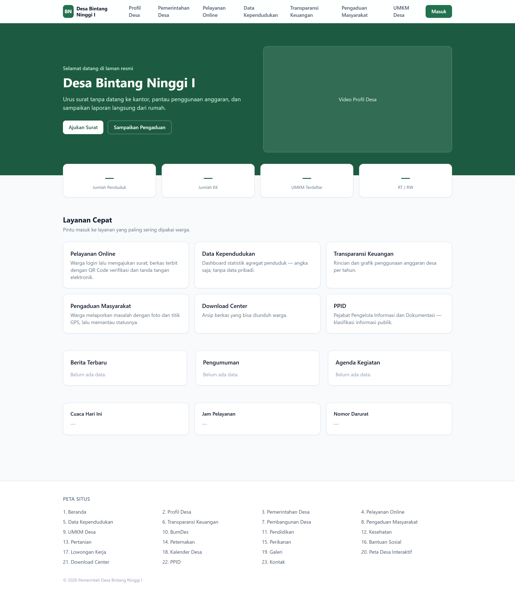
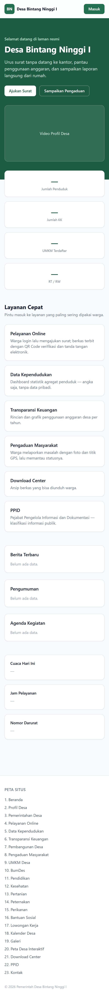
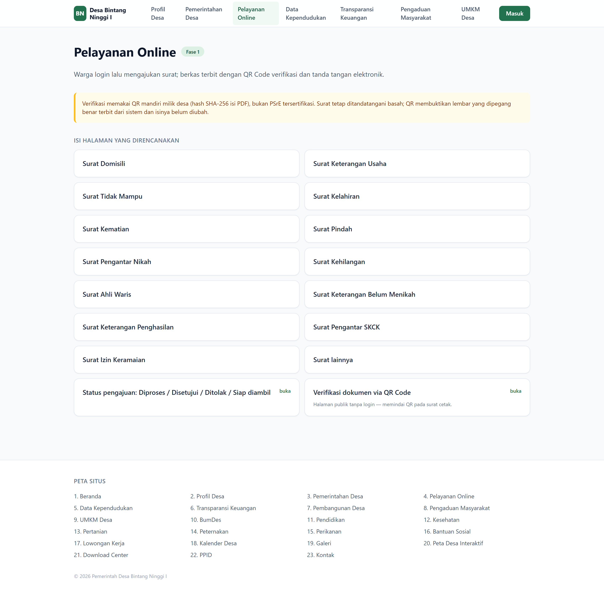
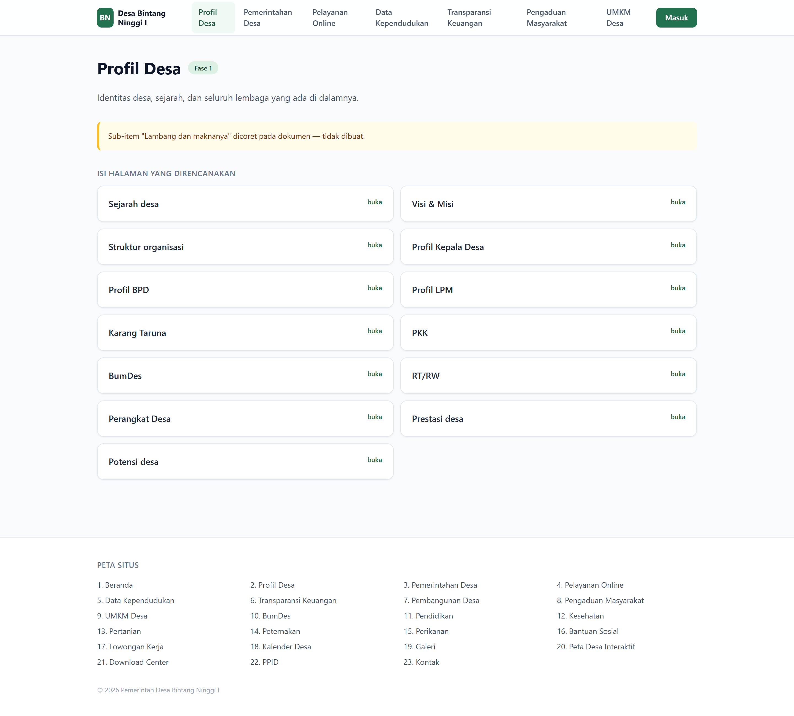
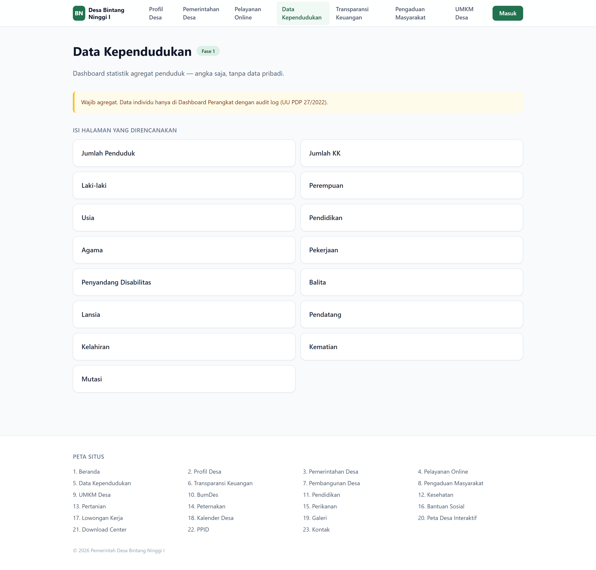
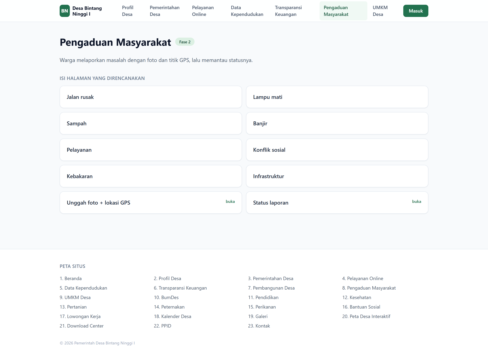
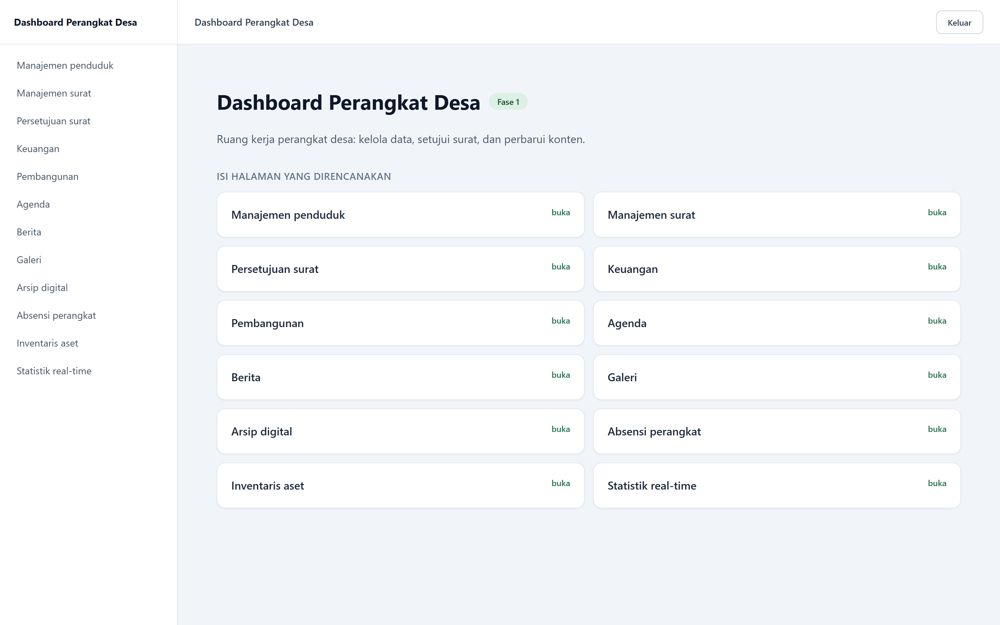
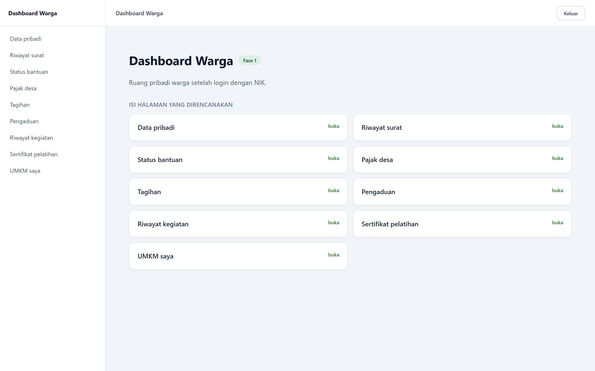

Dokumen tulisan tangan memuat 25 section. Setelah membaca seluruh coretan, dua section dibatalkan dan beberapa sub-item dihapus atau diganti. Struktur final menjadi 23 section.
| No. asli | Section | Tanda pada dokumen |
|---|---|---|
| 11 | Pariwisata Desa | Dicoret X besar menyilang seluruh blok (Destinasi wisata, Penginapan, Kuliner, Kalender event, Tiket online, Galeri, Virtual Tour) |
| 22 | Aspirasi Warga | Dicoret X besar menyilang seluruh blok (Usulan pembangunan, Voting, Saran) |
| Section | Sub-item | Keputusan |
|---|---|---|
| 2. Profil Desa | Lambang dan maknanya | Dihapus — dicoret garis lurus |
| 12. Pendidikan | SMP | Dihapus — dicoret |
| 12. Pendidikan | SMA | Dihapus — dicoret |
| 13. Kesehatan | Donor darah | Dihapus — dicoret |
| 13. Kesehatan | Puskesmas | Diganti menjadi Pustu — koreksi tulisan tangan di samping |
| 3. Pemerintahan Desa | Dokumen PPID | Dipindahkan ke section PPID (no. 24 asli) agar tidak duplikat |
Tiga lapis terpisah: React di sisi pengguna, Express sebagai satu-satunya pintu ke data,
dan MySQL sebagai penyimpan. Paket shared berisi registry section dan skema
validasi yang dipakai frontend maupun backend, sehingga aturan data tidak pernah berbeda
di dua sisi.
flowchart TB
subgraph KLIEN["Sisi Pengguna"]
direction LR
W1["Warga
browser HP"]
W2["Perangkat Desa
browser desktop"]
W3["Tamu / Publik"]
end
subgraph FE["Frontend - React + Vite"]
direction LR
R1["Halaman Publik
23 section"]
R2["Dashboard Warga"]
R3["Dashboard Perangkat"]
end
subgraph BE["Backend - Express"]
direction LR
A1["Auth
JWT + refresh"]
A2["Modul Domain
surat, pengaduan, keuangan"]
A3["Generator PDF + QR"]
A4["Audit Log"]
end
subgraph DATA["Penyimpanan"]
direction LR
D1[("MySQL
Prisma ORM")]
D2["Berkas unggahan
foto, lampiran"]
end
subgraph LUAR["Layanan Luar"]
direction LR
L1["BMKG - cuaca"]
L2["OpenStreetMap - peta"]
end
W1 --> R1
W2 --> R3
W3 --> R1
R1 --> A1
R2 --> A2
R3 --> A2
A1 --> D1
A2 --> D1
A2 --> D2
A2 --> A3
A2 --> A4
A4 --> D1
R1 -.-> L1
R1 -.-> L2
Seluruh section dikelompokkan menurut fase pengerjaan. Fase 1 membuat website sudah berguna nyata bagi warga; fase berikutnya menambah kedalaman.
flowchart TB
B(["Beranda"])
subgraph F1["FASE 1 - Inti"]
direction LR
S02["02 Profil Desa"]
S03["03 Pemerintahan Desa"]
S04["04 Pelayanan Online"]
S05["05 Data Kependudukan"]
end
subgraph F2["FASE 2 - Transparansi"]
direction LR
S06["06 Transparansi Keuangan"]
S07["07 Pembangunan Desa"]
S08["08 Pengaduan Masyarakat"]
S21["21 Download Center"]
S22["22 PPID"]
end
subgraph F3["FASE 3 - Ekonomi Desa"]
direction LR
S09["09 UMKM Desa"]
S10["10 BumDes"]
S13["13 Pertanian"]
S14["14 Peternakan"]
S15["15 Perikanan"]
S16["16 Bantuan Sosial"]
S17["17 Lowongan Kerja"]
end
subgraph F4["FASE 4 - Pelengkap"]
direction LR
S11["11 Pendidikan"]
S12["12 Kesehatan"]
S18["18 Kalender Desa"]
S19["19 Galeri"]
S20["20 Peta Desa Interaktif"]
S23["23 Kontak"]
end
B --> F1
B --> F2
B --> F3
B --> F4
B --> M["Masuk / Aktivasi"]
M --> DW["Dashboard Warga"]
M --> DP["Dashboard Perangkat Desa"]
Tiga peran dengan batas yang tegas. Yang menentukan bukan halamannya, melainkan datanya: data agregat boleh dilihat siapa saja, data pribadi hanya oleh pemiliknya dan perangkat desa yang berwenang.
flowchart LR T["TAMU
tanpa login"] G["WARGA
NIK + PIN"] P["PERANGKAT
username + password"] A["ADMIN"] T --> T1["Baca semua halaman publik"] T --> T2["Statistik agregat"] T --> T3["Verifikasi surat via QR"] G --> G1["Semua hak Tamu"] G --> G2["Ajukan surat"] G --> G3["Lihat data pribadi sendiri"] G --> G4["Buat dan pantau pengaduan"] G --> G5["Cek status bantuan sendiri"] P --> P1["Semua hak Warga"] P --> P2["Kelola data penduduk"] P --> P3["Setujui / tolak surat"] P --> P4["Kelola konten dan keuangan"] P --> P5["Tanggapi pengaduan"] A --> A1["Semua hak Perangkat"] A --> A2["Kelola akun perangkat"] A --> A3["Lihat audit log"]
Alur ini ada karena satu alasan: NIK bukan rahasia. NIK tercetak di KTP, disalin ke banyak formulir, dan diketahui banyak pihak. Kalau login cukup bermodal NIK, siapa pun yang tahu NIK tetangganya bisa membuka data pribadi orang itu. Karena itu akun harus diaktifkan lebih dulu melalui perangkat desa, dan warga menetapkan PIN miliknya sendiri.
sequenceDiagram
autonumber
actor W as Warga
actor P as Perangkat Desa
participant S as Sistem
P->>S: Daftarkan warga (pilih dari data penduduk)
S-->>P: Terbit kode aktivasi (berlaku 7 hari)
P-->>W: Serahkan kode (cetak / WhatsApp)
W->>S: Buka /aktivasi - isi NIK + kode + PIN baru
S->>S: Cocokkan NIK dan kode
S->>S: Simpan hash PIN (argon2id)
S-->>W: Akun aktif - arahkan ke halaman Masuk
W->>S: Login dengan NIK + PIN
S-->>W: Access token 15 menit + refresh token
| Kegagalan yang harus ditangani | Perlakuan |
|---|---|
| Kode kedaluwarsa / sudah dipakai | Tolak, minta warga menghubungi kantor desa |
| NIK tidak terdaftar | Pesan seragam “NIK atau kode tidak cocok” — jangan bocorkan mana yang salah |
| Percobaan berulang | Kunci akun 15 menit setelah 5 kali gagal |
| Warga lupa PIN | Reset hanya lewat perangkat desa, bukan lewat email/SMS otomatis |
Inti dari seluruh sistem. Perhatikan bahwa surat tidak langsung menjadi PDF saat diajukan. PDF baru dibuat setelah disetujui, supaya tidak ada berkas berkop desa yang beredar tanpa persetujuan perangkat.
sequenceDiagram
autonumber
actor W as Warga
participant S as Sistem
actor P as Perangkat Desa
actor K as Kepala Desa
W->>S: Pilih jenis surat di /layanan
S-->>W: Form dinamis sesuai jenis surat
W->>S: Isi data + unggah lampiran (KTP/KK)
S-->>W: Kode lacak - status DIPROSES
P->>S: Buka daftar pengajuan di /admin/surat
alt Berkas lengkap
P->>S: Setujui
S->>S: Terbitkan nomor surat
S->>S: Render PDF + hitung hash + tempel QR
S-->>W: Status DISETUJUI + tautan unduh
K->>S: Tanda tangan (basah / TTE)
P->>S: Tandai SIAP_DIAMBIL
S-->>W: Notifikasi surat siap
else Berkas kurang
P->>S: Tolak + alasan (wajib diisi)
S-->>W: Status DITOLAK + alasan perbaikan
end
Perubahan status surat mengikuti mesin status berikut. Status tidak boleh melompat sembarangan — inilah yang membuat riwayat pengajuan bisa dipertanggungjawabkan.
stateDiagram-v2
[*] --> DIPROSES: warga mengajukan
DIPROSES --> DISETUJUI: perangkat menyetujui
DIPROSES --> DITOLAK: berkas kurang
DISETUJUI --> SIAP_DIAMBIL: sudah ditandatangani
DITOLAK --> DIPROSES: warga memperbaiki dan mengajukan ulang
SIAP_DIAMBIL --> [*]
/verifikasi/{kode}.
Halaman itu publik dan hanya menampilkan nomor surat, jenis, tanggal terbit, penandatangan,
dan status keaslian — tanpa data pribadi pemohon, karena tautannya bisa dibuka siapa
saja yang memegang lembar suratnya. Yang dicocokkan adalah SHA-256 isi PDF: satu huruf saja
diubah, hash tidak lagi cocok.
Warga melaporkan masalah dengan foto dan titik GPS, lalu memantau tindak lanjutnya. Laporan boleh anonim di tampilan publik, tetapi identitas pelapor tetap tersimpan dan terlihat oleh perangkat desa. Tanpa itu, kolom pengaduan akan cepat dipenuhi laporan palsu.
flowchart TD
A["Warga buka /pengaduan/buat"] --> B{"Sudah login?"}
B -->|Belum| C["Arahkan ke /masuk"]
C --> B
B -->|Sudah| D["Pilih kategori
jalan rusak, lampu mati, sampah,
banjir, pelayanan, konflik sosial,
kebakaran, infrastruktur"]
D --> E["Isi judul dan deskripsi"]
E --> F["Unggah foto - maks. 5"]
F --> G{"Izinkan akses lokasi?"}
G -->|Ya| H["Ambil koordinat GPS otomatis"]
G -->|Tidak| I["Isi nama lokasi manual"]
H --> J["Kirim - status BARU"]
I --> J
J --> K["Perangkat desa memverifikasi"]
K --> L{"Laporan valid?"}
L -->|Ya| M["DITANGANI - tulis tanggapan"]
L -->|Tidak| N["DITOLAK + alasan"]
M --> O["SELESAI - lampirkan foto hasil"]
O --> P["Warga menerima notifikasi"]
N --> P
Dokumen asli menulis “Status penerima dapat dicek menggunakan NIK”. Cara itu diubah, dan alasannya penting.
sequenceDiagram
autonumber
actor W as Warga
participant S as Sistem
participant D as Database
W->>S: Login (NIK + PIN)
S-->>W: Sesi aktif
W->>S: Buka /warga/bantuan
S->>D: Ambil penerima berdasarkan pendudukId dari SESI
Note over S,D: Bukan dari NIK yang diketik di form
D-->>S: Daftar program + status + periode
S-->>W: Tampilkan status bantuan milik sendiri
Setiap pembukaan dan perubahan data penduduk wajib tercatat. Ini kewajiban UU PDP No. 27 Tahun 2022, sekaligus pelindung perangkat desa bila suatu saat muncul tuduhan penyalahgunaan data.
flowchart LR
A["Login perangkat"] --> B["Buka /admin/penduduk"]
B --> C["Cari via nama
atau hash NIK"]
C --> D["Buka detail penduduk"]
D --> E["Ubah data"]
E --> F["Simpan"]
F --> G[("audit_logs
siapa - kapan - dari IP mana")]
F --> H[("tabel penduduk")]
H --> I["Statistik agregat
ikut berubah otomatis"]
D -.->|dibuka saja| G
Gambaran besar: dari warga yang belum punya akun sampai memakai seluruh layanan.
journey
title Perjalanan Warga Desa Bintang Ninggi I
section Mengenal
Buka website dari HP: 5: Warga
Baca berita dan pengumuman: 4: Warga
Lihat transparansi anggaran: 4: Warga
section Bergabung
Minta kode aktivasi ke kantor desa: 3: Warga
Aktivasi akun dan buat PIN: 4: Warga
section Memakai Layanan
Ajukan surat domisili: 5: Warga
Pantau status pengajuan: 5: Warga
Unduh surat ber-QR: 5: Warga
section Berpartisipasi
Laporkan jalan rusak: 4: Warga
Pantau tindak lanjut: 4: Warga
Jualan di marketplace UMKM: 5: Warga
Tidak ada payment gateway. Tiap UMKM memasang QRIS miliknya sendiri; pembeli transfer lalu mengunggah bukti, dan penjual yang memverifikasi. Akibatnya desa tidak pernah memegang uang warga, tidak ada biaya per transaksi, dan tidak perlu akun merchant.
sequenceDiagram
autonumber
actor B as Pembeli
participant S as Sistem
actor J as Penjual UMKM
B->>S: Pilih produk, masuk keranjang
B->>S: Buat pesanan
S-->>B: Kode pesanan + QRIS milik penjual
Note over B: Transfer lewat aplikasi bank / e-wallet
B->>S: Unggah bukti bayar (foto struk)
S-->>J: Notifikasi bukti bayar masuk
alt Bukti cocok
J->>S: Verifikasi diterima
S-->>B: Status DIBAYAR
J->>S: Tandai DIPROSES_PENJUAL
J->>S: Tandai SELESAI
B->>S: Beri rating dan ulasan
else Bukti tidak cocok
J->>S: Tolak + alasan (wajib diisi)
S-->>B: Status DITOLAK, boleh unggah ulang
end
stateDiagram-v2
[*] --> MENUNGGU_PEMBAYARAN: pesanan dibuat
MENUNGGU_PEMBAYARAN --> MENUNGGU_VERIFIKASI: bukti diunggah
MENUNGGU_PEMBAYARAN --> DIBATALKAN: lewat 24 jam
MENUNGGU_VERIFIKASI --> DIBAYAR: penjual menerima
MENUNGGU_VERIFIKASI --> DITOLAK: bukti tidak cocok
DITOLAK --> MENUNGGU_VERIFIKASI: unggah ulang
DIBAYAR --> DIPROSES_PENJUAL: pesanan disiapkan
DIPROSES_PENJUAL --> SELESAI
SELESAI --> [*]
riwayat_pesanan, alasan
penolakan wajib diisi, dan perpindahan status dikunci agar tidak bisa melompat.
Gambar berikut diambil dari aplikasi React yang benar-benar berjalan di
http://localhost:5173, bukan mockup. Halaman yang belum digarap tampil sebagai
kerangka yang memuat daftar isi rencananya — itu memang disengaja, supaya struktur bisa
didiskusikan lebih dulu dengan pihak desa sebelum kontennya dibangun.








Total 78 layar: 23 halaman section, 32 sub-halaman, 21 menu dashboard, ditambah halaman masuk dan aktivasi.
| ID | Layar | Rute | Akses | Fase |
|---|---|---|---|---|
| S01 | Beranda | / | publik | 1 |
| S02 | Profil Desa | /profil | publik | 1 |
| S03 | Pemerintahan Desa | /pemerintahan | publik | 1 |
| S04 | Pelayanan Online | /layanan | publik | 1 |
| S05 | Data Kependudukan | /kependudukan | publik | 1 |
| S06 | Transparansi Keuangan | /keuangan | publik | 2 |
| S07 | Pembangunan Desa | /pembangunan | publik | 2 |
| S08 | Pengaduan Masyarakat | /pengaduan | publik | 2 |
| S09 | UMKM Desa | /umkm | publik | 3 |
| S10 | BumDes | /bumdes | publik | 3 |
| S11 | Pendidikan | /pendidikan | publik | 4 |
| S12 | Kesehatan | /kesehatan | publik | 4 |
| S13 | Pertanian | /pertanian | publik | 3 |
| S14 | Peternakan | /peternakan | publik | 3 |
| S15 | Perikanan | /perikanan | publik | 3 |
| S16 | Bantuan Sosial | /bantuan-sosial | publik | 3 |
| S17 | Lowongan Kerja | /lowongan | publik | 3 |
| S18 | Kalender Desa | /kalender | publik | 4 |
| S19 | Galeri | /galeri | publik | 4 |
| S20 | Peta Desa Interaktif | /peta | publik | 4 |
| S21 | Download Center | /download | publik | 2 |
| S22 | PPID | /ppid | publik | 2 |
| S23 | Kontak | /kontak | publik | 4 |
| D-P | Dashboard Perangkat Desa | /admin | perangkat | 1 |
| D-W | Dashboard Warga | /warga | warga | 1 |
Manajemen penduduk · Manajemen surat · Persetujuan surat · Keuangan · Pembangunan · Agenda · Berita · Galeri · Arsip digital · Absensi perangkat · Inventaris aset · Statistik real-time
Data pribadi · Riwayat surat · Status bantuan · Pajak desa · Tagihan · Pengaduan · Riwayat kegiatan · Sertifikat pelatihan · UMKM saya
| Aturan | Alasan |
|---|---|
| NIK dan nomor KK dienkripsi at rest (AES-256-GCM), pencarian lewat kolom HMAC | Bocornya dump database tidak langsung berarti bocornya identitas seluruh warga desa |
| Statistik publik selalu agregat | Halaman Data Kependudukan tidak boleh bisa dipakai menelusuri individu |
| Tidak ada endpoint publik yang menerima NIK sebagai input | Mencegah penyisiran NIK untuk memetakan warga |
| Access token 15 menit + refresh token | Sesi panjang di perangkat bersama (HP pinjaman, warnet) berisiko |
| Rate limit ketat pada endpoint autentikasi | Mencegah percobaan NIK/PIN massal |
| Setiap akses data penduduk masuk audit log | Kewajiban UU PDP No. 27/2022 dan pelindung perangkat desa |
| Alasan penolakan surat wajib diisi | Warga berhak tahu apa yang harus diperbaiki |
Lima pertanyaan terbuka pada versi awal storyboard sudah dijawab. Berikut keputusannya beserta pengaruhnya terhadap rancangan.
| Topik | Keputusan | Pengaruhnya |
|---|---|---|
| Pembayaran QRIS | Manual. Tiap UMKM memasang QRIS sendiri; pembeli unggah bukti bayar, penjual memverifikasi | Tidak perlu payment gateway, akun merchant, maupun biaya per transaksi. Desa tidak pernah memegang uang warga. Lihat Alur 7 |
| Tanda tangan | QR verifikasi mandiri milik desa | Tidak perlu mendaftar ke PSrE. Surat tetap ditandatangani basah; QR mencegah pemalsuan. Bukan TTE tersertifikasi menurut PP 71/2019 |
| Data penduduk | Mengikuti format baku Kartu Keluarga / Dukcapil | Kolom dan daftar nilainya dibakukan, termasuk urutan kolom CSV untuk impor. Statistik tidak pecah karena beda penulisan |
| Nomor & isi surat | Fleksibel, bisa diubah kemudian | Format nomor, redaksi surat, field yang harus diisi pemohon, dan lampiran wajib semuanya disunting dari dashboard — tanpa mengubah kode |
| Data desa | Bisa ditambah, diubah, dihapus | CRUD penuh dari Dashboard Perangkat. Kecuali data penduduk: tidak dihapus, melainkan ditandai meninggal/pindah agar riwayat surat tetap tertelusur |
Bukan lagi pertanyaan teknis, melainkan bahan:
packages/shared/src/constants/sections.ts
pada repositori proyek. Perubahan struktur cukup dilakukan di file itu — rute aplikasi,
menu navigasi, dan dokumen ini ikut menyesuaikan.